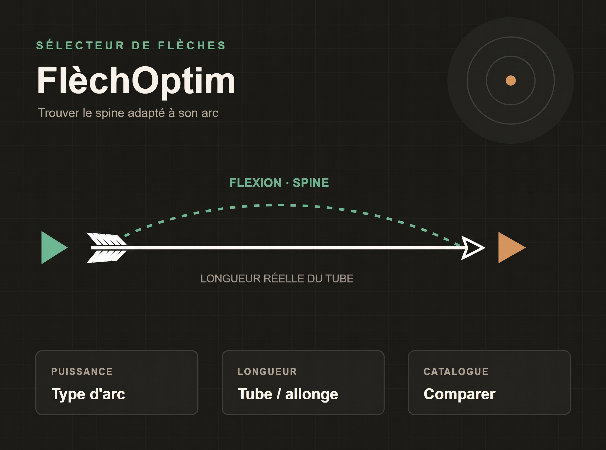

FlèchOptim.
Un sélecteur de flèches conçu pour aider les archers à trouver un spine adapté à leur configuration, puis à comparer des modèles disponibles.
Essayer FlèchOptim ↗- Type
- Projet personnel
- Domaine
- Tir à l'arc
- Format
- Outil web interactif
Choisir sa flèche, simplement.
Choisir une flèche implique de tenir compte de plusieurs éléments de son matériel. FlèchOptim rassemble ces paramètres dans un parcours guidé pour obtenir une recommandation de spine et explorer des tubes correspondants.
Un ami archer avait choisi un spine inadapté.
J’ai créé FlèchOptim pour faciliter le choix des flèches et faire gagner du temps aux archers, en leur évitant de calculer leur spine à la main.
Trois étapes
- 01
Configurer l'arc
Choisir un arc classique ou à poulies et renseigner sa puissance.
- 02
Préciser la flèche
Saisir la longueur du tube en pouces ou en centimètres et, si besoin, le poids de pointe.
- 03
Comparer les options
Calculer le spine recommandé et repérer les flèches compatibles dans le catalogue.
Un catalogue pour comparer
Les filtres permettent de parcourir les modèles selon la tranche de prix, le matériau ou le diamètre. Les fiches indiquent le prix par tube, la matière, le diamètre et les spines disponibles. Les références compatibles avec le résultat du calcul sont mises en évidence, et le catalogue peut être exporté en PDF.
- Choix entre arc classique et arc à poulies.
- Unités de longueur en pouces ou en centimètres.
- Poids de pointe ajustable, avec une valeur par défaut de 100 grains.
- Filtres par prix, matériau et diamètre, avec bascule entre thème sombre et clair.
Améliorations possibles
À l’avenir, une piste pour rendre l’application encore plus fiable serait de la connecter à une IA générative, comme Google Gemini ou ChatGPT. Elle pourrait élargir le choix de flèches sans qu’il soit nécessaire de les ajouter manuellement à une base de données. Surtout, si l’IA pouvait consulter directement les tableaux des fabricants, elle pourrait s’appuyer sur leurs données pour fournir des recommandations plus précises.